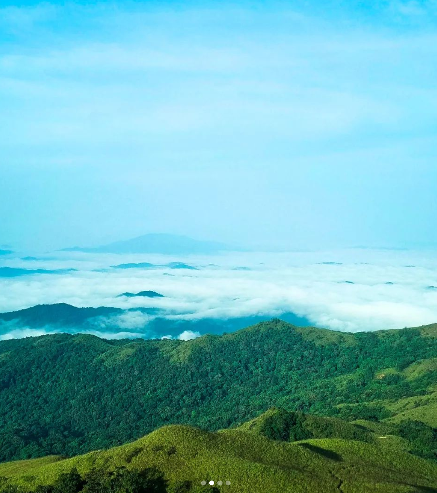
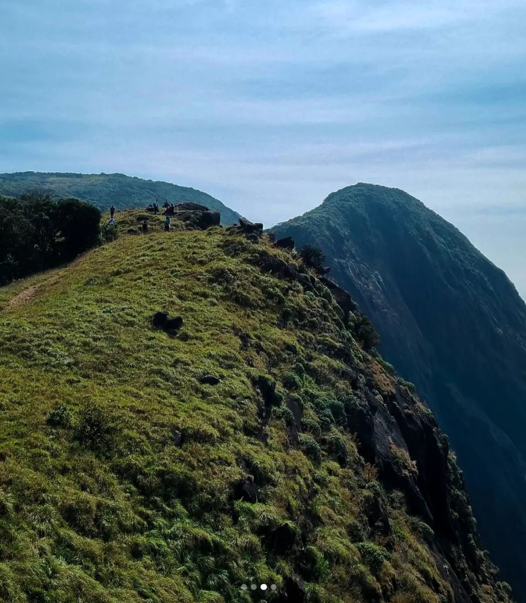
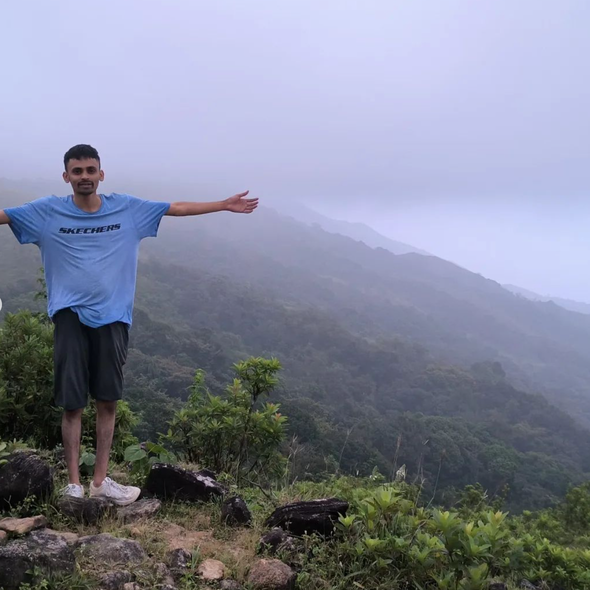
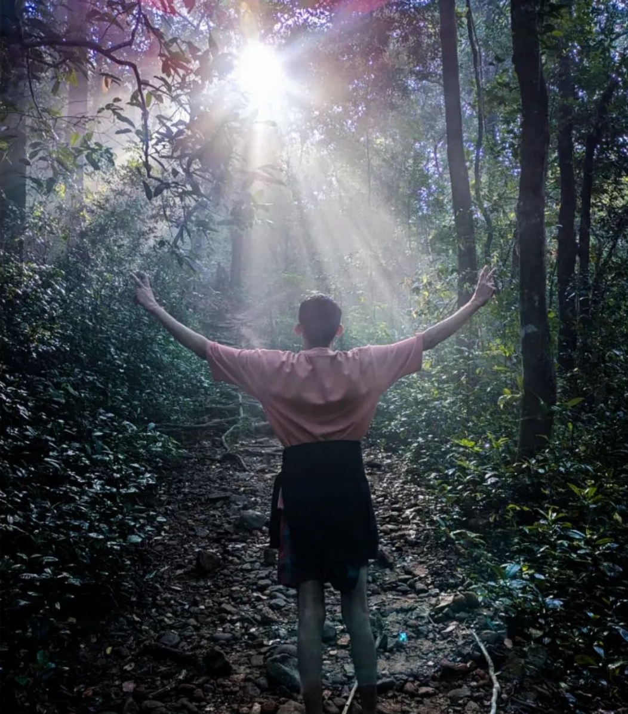
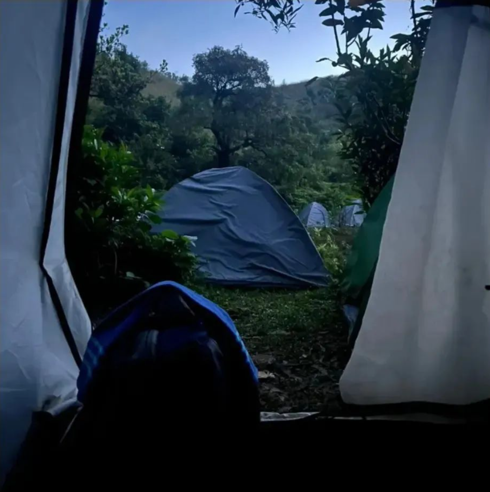
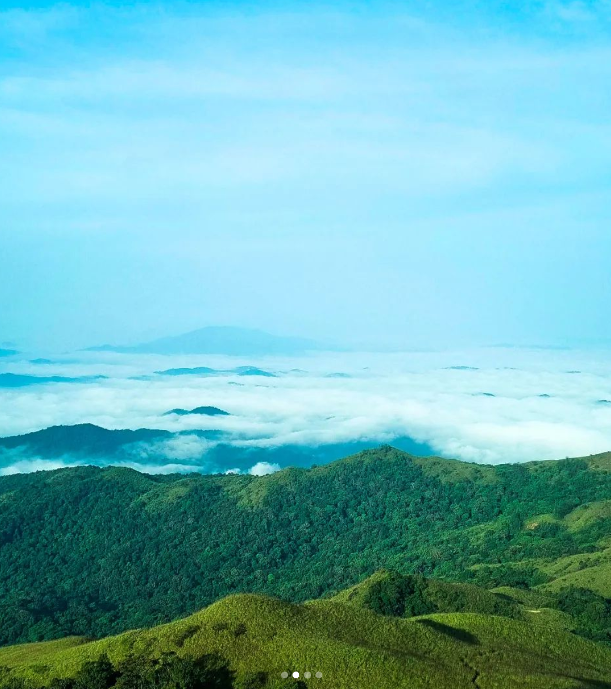
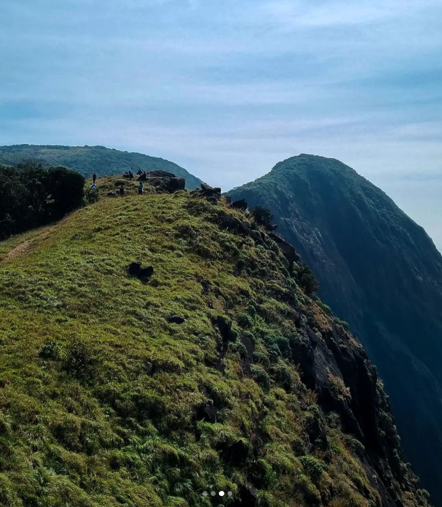
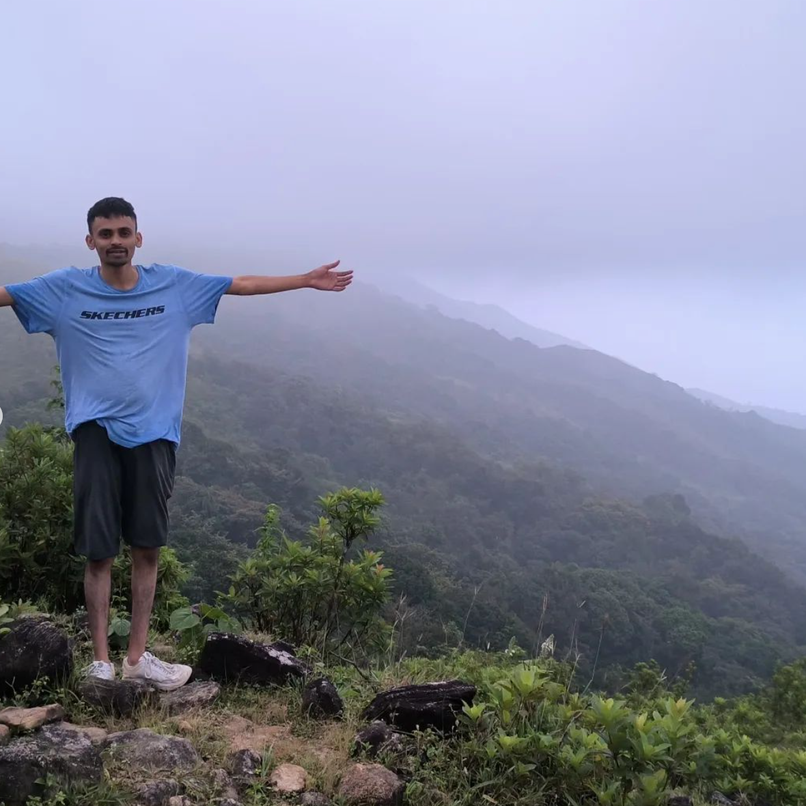
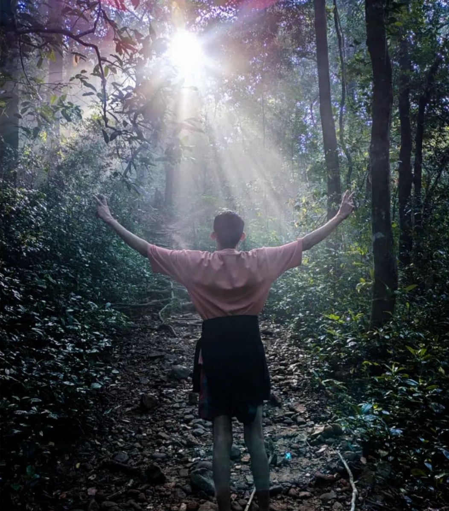
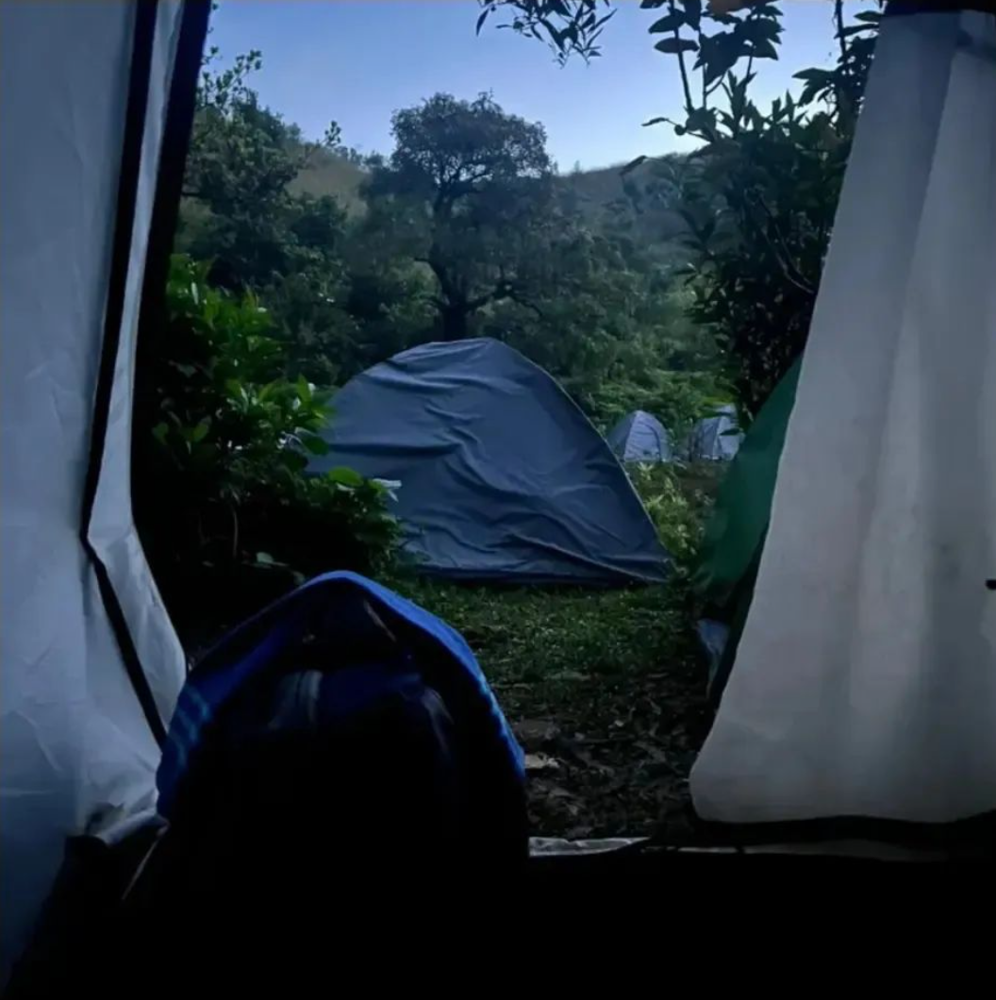

Overview
Photos :
 









Travel Tips :
Best time to visit:
Plan your trip between October and February to enjoy pleasant weather and lush greenery.Clothing and gear pack:
Pack light, comfortable clothing suitable for trekking, avoid more plastic covers,carry sanitizer or vasline to get rid of leach, Sturdy footwear is essential for exploring the hilly terrain.Accommodation:
Book accommodations in advance, especially during peak seasons, to ensure availability. Consider staying in local lodges or resorts for an immersive experience.Wildlife Etiquette:
Respect wildlife and maintain a safe distance when encountering animals. Follow sanctuary guidelines to preserve the natural habitat.local cuisine:
Explore local eateries to savor authentic Karnataka cuisine. Don’t miss trying traditional dishes that reflect the region’s cultural heritage.
Conclusion :
Personal experience
After seeing mesmerizing images on the internet, we, five friends, planned a trip to Kumara Parvatha, a hidden beauty of Karnataka. We left on Friday night via Hassan and reached Kukke Subramanya Temple, where we rented a room for around Rs. 600. After a few hours of sleep, we arrived at the trek starting point at 5:00 AM on a chilly morning, finding ourselves alone. At the checkpoint, the forest department checked our backpacks and counted our plastic covers containing chocolates, sweets, water bottles, etc. We paid a deposit of Rs. 500 and began our trekking adventure. Initially, we were full of excitement and energy, but as we continued, fatigue set in. After hiking for about 4 km, we discovered a small waterfall where we took a break and enjoyed some water fun. During this break, one of my friends had a humorous encounter with a leech. We resumed our journey, reaching a place called "Batrumane" around 10:30 AM, where tents were available for accommodation and unlimited food was offered at Rs. 150, marking the first phase of our trekking experience.Moving forward, after Batramane, we encountered the forest department again, marking the start of the second phase of our trek. We made sure to enter by 10:50 AM as 11:00 AM was the deadline. The second phase, unlike the first, was truly breathtaking. Despite the hot afternoon sun, we savored the stunning scenery.
Finally, we reached the peak around 2:00 PM, and it was a sight of sheer beauty. We spent time taking photos, indulging in some funky dances, and soaking in the serene atmosphere. As we began our descent, clouds covered the sun and a cool breeze enveloped us—it felt like paradise. By around 7:00 PM, we returned to Batramane, where we rented a tent and enjoyed a meal of rice, sambar, and buttermilk. Navigating back in the darkness was challenging; we even lost our way briefly. However, we managed to return safely. Exhausted, we collapsed into the tent and quickly drifted off to sleep.